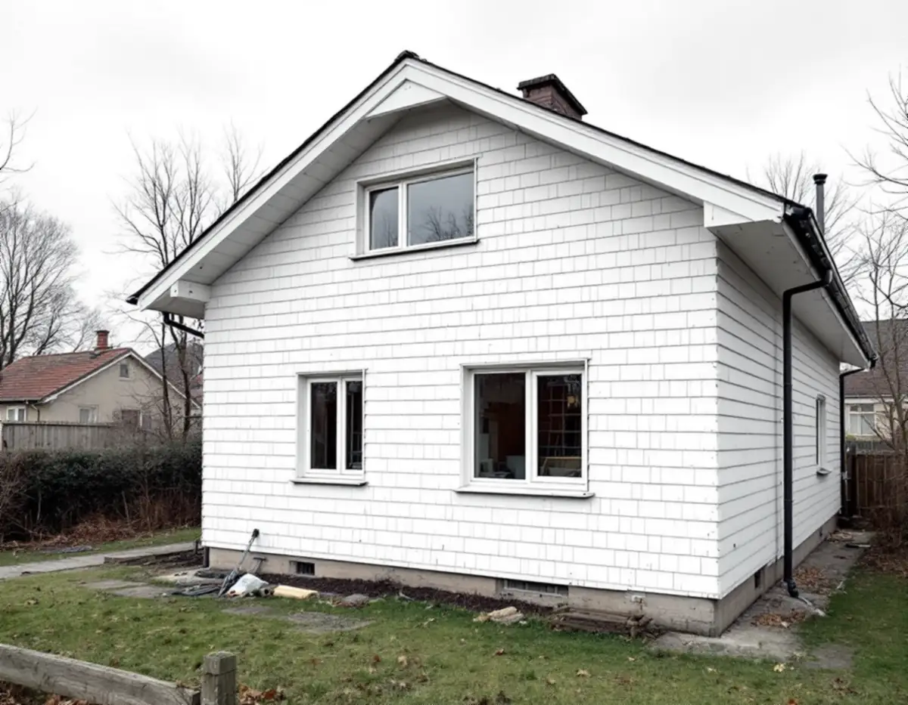
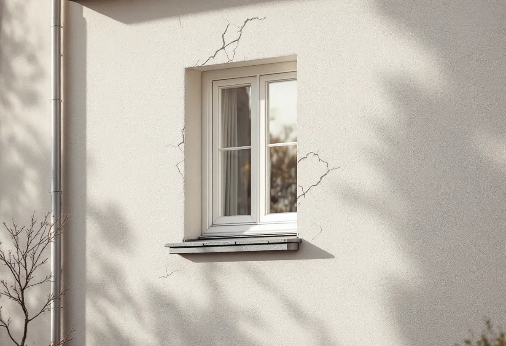

Genomgång av fasaden
Vi kontrollerar panel, puts, sockel, fönsteranslutningar och plåtar och öppnar där det behövs.
En fasadrenovering kan vara allt från att byta några rötskadade panelbrädor till att riva hela beklädnaden, tilläggsisolera och sätta upp ny panel eller puts. Geal bedömer först vad väggen behöver och samordnar sedan ställning, snickeri, puts, plåt och målning i en och samma entreprenad.

På en träfasad uppstår skadorna där vatten blir kvar: nederst mot sockeln, kring fönstren och under fönsterbleck, och på ändträ som saknar skydd. I sin energiguide skriver Boverket att gamla fönstertätningar ofta släpper in vatten under fönstren, särskilt på väggar som tar emot slagregn. En fasadrenovering börjar därför med att vi känner på virket, petar i misstänkta partier och öppnar där det behövs.
Är det mesta av panelen frisk räcker det att byta de skadade brädorna mot nya med samma profil och dimension och sedan måla. Har panelen gjort sitt över stora ytor, eller har upprepade ommålningar med olika färgtyper byggt upp ett skikt som flagnar, kan det vara klokare att byta hela beklädnaden. Då går det också att se över vindskydd, läkt och isolering bakom panelen.
Byts panelen mot samma material och utförande som tidigare räknas det som underhåll och inte som fasadändring. Ska fasaden få en ny färg efteråt hänger valet av färgtyp ihop med panelen: slamfärg fäster bra på ohyvlat virke men sämre på hyvlad panel. Mer om det på sidan om målare.

En putsad fasad lagas bäst med ett bruk som passar det som redan sitter på väggen. Riksantikvarieämbetet beskriver hur man vid mitten av 1900-talet gick alltmer från kalkbruk till kalkcementbruk, och samtidigt till andra färger än kalkfärg. Kalkfärg fäster bra på kalkputs men dåligt på cementrika underlag, och den släpper igenom fukt nästan obehindrat.
Därför tar vi reda på vilken puts huset har innan sprickor lagas eller fasaden putsas om. Lösa partier knackas ner, underlaget rensas och nytt bruk byggs upp mot den gamla ytan. När skadorna är många eller putsen har släppt över stora delar blir en omputsning av hela fasaden aktuell, och då behöver även sockel, fönsteranslutningar och plåtar ses över i samma veva.
Efter lagningen ska fasaden avfärgas med en färg som fungerar på just det underlaget. Handboken anger att kalkfärg i dag främst används vid ommålning av ytor som redan är kalkavfärgade och vid nymålning av ren kalkputs på kulturhistoriskt värdefulla hus.
Boverkets energiguide beskriver utvändig tilläggsisolering som oftast bäst både för energin och för fukten, eftersom den gamla väggen blir varmare och torrare och köldbryggor kan byggas bort. Invändig isolering gör tvärtom väggens utsida kallare, så att fukt torkar ut långsammare, och risken för röta, mögel och frostsprängning ökar ju tjockare man isolerar.
En utvändig isolering förändrar däremot huset. Väggen blir tjockare, fönster och dörrar hamnar längre in, takfoten skjuter ut mindre och fasaden kan hänga ut över sockeln. Boverket varnar för ett överjäst uttryck och för att utåtgående fönster kanske inte längre går att haka av. Ofta behöver fönstren flyttas ut och sockel och takfot byggas på för att proportionerna ska bli rätt.
Bäst blir det när panelen ändå ska bytas, så att samma arbete inte görs två gånger. Arbetet bör ske i torrt väder så att fukt inte stängs in, och ligger huset nära tomtgränsen kan en tjockare vägg inkräkta på grannens mark. Jämför gärna med att isolera uppåt – se vindsisolering och energieffektivt tak.
För villor, parhus och andra en- och tvåbostadshus krävs sedan 1 december 2025 inget bygglov för att byta fasadmaterial, till exempel från puts till träpanel, eller för att påverka husets karaktärsdrag på annat sätt, enligt Boverkets kunskapsbank. Undantagen gäller skyddsbestämmelser i detaljplan eller områdesbestämmelser, särskilt värdefulla byggnader och miljöer samt planer med utökad lovplikt.
I Stockholms stad skriver stadsbyggnadskontoret att Stadsmuseets klassificeringskarta ger en första indikation på om bygglov behövs. Lovfria åtgärder ska ändå uppfylla varsamhetskraven, och Boverket påpekar att en tilläggsisolering kan vara otillåten om den förvanskar en särskilt värdefull byggnad. För flerbostadshus inom detaljplan krävs fortfarande lov för fasadändring mot allmän plats.
Påverkar arbetet den bärande konstruktionen eller brandskyddet kan det dessutom behövas en anmälan, även när lov inte krävs, och i vissa fall ska åtgärden följa detaljplanens bestämmelser trots att den är lovfri. Fastighetsägaren förväntas själv ta ansvar för att kraven uppfylls, skriver Stockholms stad.
Vi kontrollerar panel, puts, sockel, fönsteranslutningar och plåtar och öppnar där det behövs.
Ett skriftligt förslag som skiljer på lagning, byte, isolering och målning.
Vi stämmer av klassning, detaljplan och gränsavstånd innan något beställs.
Ställning byggs, och skadad panel eller lös puts tas bort.
Trä byts, isolering kompletteras och ny panel eller puts kommer på plats.
Fasaden målas eller avfärgas, plåtar monteras och vi går igenom resultatet tillsammans.
Enligt Skatteverkets lista ger det ROT i småhus att byta, mura och reparera fasader, tilläggsisolera, rengöra fasader och måla fasader. Avdraget är 30 procent av arbetskostnaden, högst 50 000 kronor per person och år och högst 75 000 kronor för ROT och RUT tillsammans. Material, utrustning och resor ger inte avdrag. Geal drar avdraget direkt på fakturan.
För bostadsrätt ger varken tilläggsisolering, fasadtvätt eller målning av fasaden rätt till ROT.
Fasadens yta och höjd, hur stor del av panelen eller putsen som är skadad, valet mellan lagning och byte, om väggen ska tilläggsisoleras och hur mycket fönster, sockel och plåtar behöver anpassas. Ställning och bortforsling av gammalt material är också en del av kalkylen.
Efter ett kostnadsfritt platsbesök får du ett skriftligt kostnadsförslag med varje moment för sig.
Fasad, fönster och invändig målning.
Målare i Stockholm →Byta eller renovera fönster.
Fönsterbyte i Stockholm →Tilläggsisolering uppåt.
Vindsisolering →Hela huset i en entreprenad.
Villarenovering →